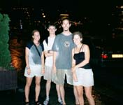

Vienna (2000-07-01) Day 18:
The trip from Prague was interesting. First we got
off one station early (the train was slow, so we got off at the right time,
but wrong place). A quick look about showed us we were in the wrong place,
so we ran back up and barely made it back onto the train. Ha, so then at
the proper station we got off, but the delayed train missed our connection,
so we spent an hour and a half in a border town, which was rather nice
really.
| In
Vienna we stayed at a bed and breakfast, very nice. In the evening we rode
the trams around the city ring, seeing most of the important sights in
no time at all. After dinner (I had Goulash, a local dish) we went to the
carnival, just north of downtown. A great place, nice atmosphere, and a
special music event going on as well. We all paid for a special tour of
the city called "space shot". Actually it was a rather high ride, which
launched you straight up and gave a spectacular view of the city at night
and the sunset behind the mountains in the distance. (Five bounces in all,
amazingly exhilarating (however you spell that)). The others sampled the
apple strudel (I passed, as it’s not to my taste). |
The next day we traveled to the Schonbrunn Palace.
Very large, with expansive gardens and a spectacular fountain. Next we
stopped at St. Stephan’s cathedral, and toured the catacombs. We saw bones
from almost 4 thousand, rather Poe like. The evening we spent down by the
Danube. Ryan and I hacked, the girls talked, and later I climbed a rather
tall weeping willow to recline at the top. On the way home we saw fireworks
-- it’s some sort of holiday here? Well, close enough to July 4th for us,
we sang to them.
Budapest (2000-07-02) Day 19
We just arrived, the train ride stifling hot. This
city is very nice, surprisingly normal so far. We strolled down a very
fine promenade, and had dinner. My kisbojtar kedvence (pork & goat
cheeze deep fried) was very tasty. The internet doesn´t pose a problem
here, cafes are everywhere.
Budapest (2000-07-03) Day 20
| Last
night we went to meet the English boys at the Hero's Square where the final
football game was to be displayed on a huge screen. However, it turned
out to be the Pet Shop Boys?? We left. =) Today we went to the hot spring
baths, very nice time in the sun. Later we went to see art on the water,
we took a row boat around to look at all the pieces. Then we went to see
the castle. It started lightning and raining. We ran across the bridge
with the lions in the pouring rain, another memorable moment. The lightning
show was stunning; it was all around us, on all horizons, behind mountains
and nearby hills. You never knew where it would flash next, then it would
and you'd turn to catch the lingering fingers of star fire. I feel nostalgic
already. =) |
Budapest (2000-07-04) Day 21
Last day here, NOT, Ryan and I have added one more
on! After running around to train stations in the morning, we joined Julie,
Debbie, Lee, and Mark at a Turkish bath. A bit more genuine then yesterday,
which was just a thermal. Ryan and I got the extended pass. Without a clue
as to what we were doing or supposed to be doing, we donned these itty
bitty little napkins and walked into an elegant mosaic and stained glass
hall.  After
soaking in the mineral rich spring for a while, we stepped into the wall
of heat in the sauna. I have no idea how hot it was, but I have never experienced
hotter. Breathing was almost impossible; visibility was blurred from thick
suspended moisture and only a few feet. Moving was painful, as the still
hot air was almost abrasive. After that, a talcum massage, and then the
sauna and ice bath and extreme relaxation in the sun outside. After eating,
we all took a nap. We failed to tell the girls we were staying another
day, and they started getting anxious when our departure time approached
at 6:55. Not the worlds best joke, but funny still. Ryan and I checked
out the castle area again, the girls got about, and now we're going out
to a techno 'foam party', whatever that is. =) After
soaking in the mineral rich spring for a while, we stepped into the wall
of heat in the sauna. I have no idea how hot it was, but I have never experienced
hotter. Breathing was almost impossible; visibility was blurred from thick
suspended moisture and only a few feet. Moving was painful, as the still
hot air was almost abrasive. After that, a talcum massage, and then the
sauna and ice bath and extreme relaxation in the sun outside. After eating,
we all took a nap. We failed to tell the girls we were staying another
day, and they started getting anxious when our departure time approached
at 6:55. Not the worlds best joke, but funny still. Ryan and I checked
out the castle area again, the girls got about, and now we're going out
to a techno 'foam party', whatever that is. =) |
Budapest (2000-07-05) Day 22
Ok, so, Ryan stayed behind to sleep while the girls
and I went in search of E Club. There was supposed to be foam techno --
which is just a techno club but with foam instead of fog, or something,
I don't know, because we didn't make it there. We started out, but the
metro had stopped. So, we took a bus, but instead of heading down the main
street where we got on, it did this weird path in a funky diagonal -- really
fast. In no time we're way out in the middle of nowhere, but within walking
distance to the club. We decide to head back, as we don't know the territory,
and conveniently fond a return bus. Only, it does the same thing. So, no
problem, we're now closer to downtown and just have a 30 minute walk. We
catch a beer on the way home. (My my, nice dark beer here, smooth and sweet.)
I've been tracking out position on the map, and everything is cool, until
we get back to the Danube and (POOF!) all the street names have changed?
Well, we get a visual of where we want to go, and start heading there,
but along the way realize the mistake (rather confusing to explain, but
it allowed us to travel on a main street and have all the street names
be the same but be in a completely different place) and walk another hour
back. Rather interesting... We deemed the day 'Alternate Universe' day.
Today we went to see the labyrinth under the Buda Castle, and the Andy
Worhal art exhibit. Cards in the park, some more window shopping, this
internet time, and we're ready to hop on our train out of here. It's our
last day with the girls however, so sad.
Venice (2000-07-06) Day 23
| Expensive,
crowded, smelly, but beautiful. Venice is truly a city rising right from
the water. We arrived on an overnight train in the morning, and booked
an overnight train out (to avoid the expenses of an overnight stay). On
the train there we met Mark, a Quebecker, who informed us why Canada must
let Quebec go free. =) He's very cool. He stayed in Venice, for $60 a night!
We enjoyed the labyrinth of streets and the spider web of canals as we
explored the city in the blazing sun. Ice-cream offered a little comfort.
We saw the basilica at the square of (some name) and went up the bell tower
there. We saw a huge cruise ship slowly craw through one of the big canals,
it was insane! A 15 story ship gliding through a city, just a dozen feet
or so from houses! The art there was also very impressive and enjoyable. |
|